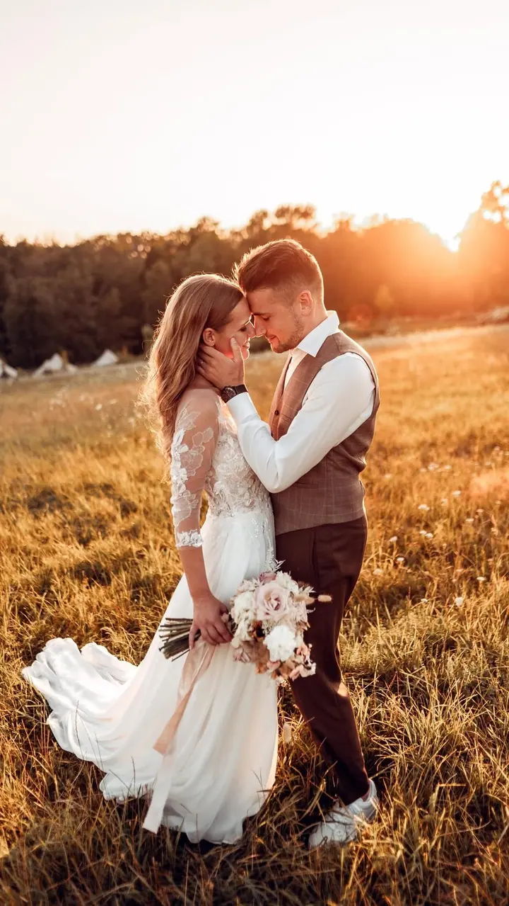
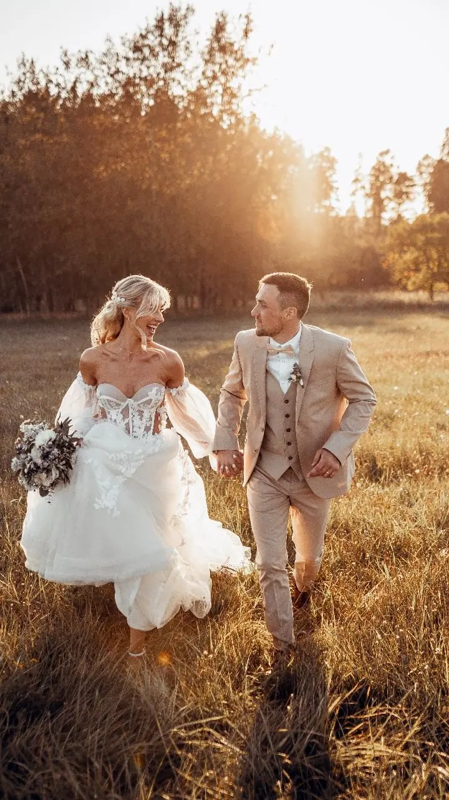
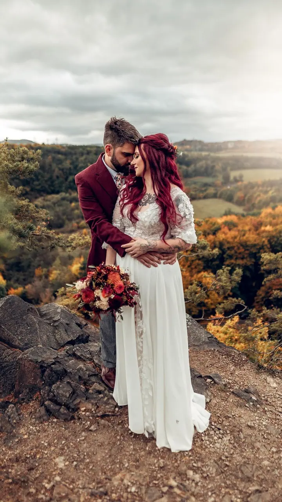
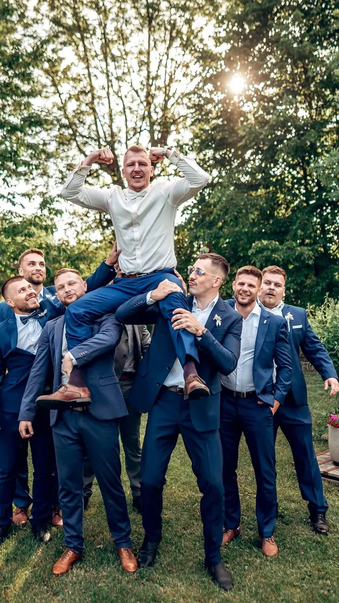

jedna
Svatební fotografie
Žádné strojené pózy a nucené úsměvy, jen skutečný smích, emoce a momentky. Budu naslouchat vašim přáním a celý den s vámi prožiju.

Svatební a rodinný fotograf a videomaker · Turnov, Český ráj, celá ČR i zahraničí

Jmenuji se Míra Vavřich a jsem svatební fotograf a videomaker z Turnova v Českém ráji. Místo strojených póz mám radši skutečný smích, emoce a momentky, a nejvíc mě baví vyprávět vaše příběhy.
Více o mně
Co dělám
jedna
Žádné strojené pózy a nucené úsměvy, jen skutečný smích, emoce a momentky. Budu naslouchat vašim přáním a celý den s vámi prožiju.
dvě
Procházka, světlo zapadajícího slunce a vy dva. Focení si spolu užijeme a vzniknou přirozené a živé fotky.
tři
Pojďte si se mnou focení užít. Mám rád přirozené a živé fotografie, které vám budou dlouho dělat radost.
Jsem fotograf i videomaker v jednom. Váš den tak můžete mít zachycený na fotkách i ve filmu.
Žádné strojené pózy, jen skutečné emoce.

Za objektivem
Jmenuji se Míra. Narodil jsem se a žiju v Turnově v Českém ráji, vystudoval jsem uměleckou školu a kolem foťáku se motám už od malička. Baví mě cokoli, co je spojené s fotografií nebo videem.
Nejčastěji fotím svatby a rodiny, ale točím i video, fotím plesy a sport. Odfoceno mám přes 200 svatebních příběhů po celé republice i mimo ni. Výzvám se nebráním.
Hrozně rád cestuju, takže pro mě není problém přijet za vámi kamkoli v Česku i do zahraničí. Když zrovna nefotím svatby, jsem na cestách nebo venku se svými psy.
Miroslav
Pošlete mi termín a pár slov o vaší svatbě nebo focení. Ozvu se a domluvíme se, jestli máme volno.
Sejdeme se a projdeme si vaše představy, místo a průběh dne. Budu naslouchat vašim požadavkům.
V den D jsem s vámi, směju se s vámi a hledám skutečné momenty. Žádné nucené úsměvy.
Fotky pečlivě vyberu a upravím, a pokud chcete i video, sestříhám vám film z vašeho dne.
Portfolio
Otázky
Ano. Hrozně rád cestuju, takže za vámi přijedu kamkoli v Česku i do zahraničí.
Ano, jsem fotograf a videomaker v jednom. Napište mi, co byste chtěli, a domluvíme se, jak to pojmout.
Vůbec ne. Nemám rád strojené pózy, jde mi o skutečný smích a emoce. Stačí, když budete sami sebou.
Napište mi přes formulář nebo na e-mail, případně si domluvíme schůzku a vše probereme.
Napište pár vět o tom, co si představujete. vavrichmiroslav@seznam.cz